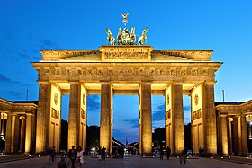

CONTENIDOS
- Origen y historia
- Origen y historia
- Lugares turistas, Poblacion

- Ultimas noticias
El territorio de la actual Alemania ha estado habitado desde tiempos remotos, pero debieron pasar muchos siglos —con numerosas inmigraciones, invasiones y conquistas— para que se configuraran las particularidades nacionales de los alemanes. En el sentido estricto de la palabra, Alemania como Estado no existió hasta la fundación del Imperio alemán en 1871. Hasta ese momento, "Alemania" había sido conformada por cientos de principados y condados que, si bien compartían una sola lengua y daban tributo a un solo emperador, eran de facto independientes entre sí.
Puerta de Brandeburgo
Está situada en la parte occidental del centro de Berlín, en Mitte, en la intersección de Unter den Linden y Ebertstraße, al oeste de la plaza de París. Una manzana al norte está el edificio del Reichstag, que alberga el Parlamento alemán (Bundestag). La puerta constituye la entrada monumental a Unter den Linden, un bulevar con tilos que conduce directamente al Palacio Real de los monarcas prusianos.
Con más de 82 millones de habitantes, es el segundo país más poblado de Europa después de Rusia y el país más poblado de la Unión Europea. Sin embargo, su tasa de fecundidad de 1,54 hijos por mujer es uno de las más bajas del mundo, y la Oficina Federal de Estadística estima que la población se reducirá a entre 68 y 73 millones en 2060.
Alemania y otros seis países de la UE se enfrentan a la reforma eléctrica planteada por España
BRUSELAS, 13 Feb. (EUROPA PRESS) - Un bloque de siete países liderado por Alemania ha remitido este jueves una carta a la Comisión Europea en la que reclama una reforma del mercado eléctrico limitada que mantenga los beneficios reportados por el sistema en la última década y que no comprometa los objetivos climáticos y energéticos de la UE, un planteamiento contrario al de países como España, que aboga por una revisión estructural.